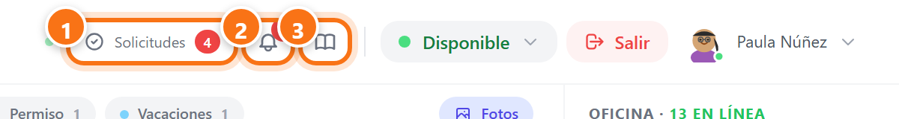
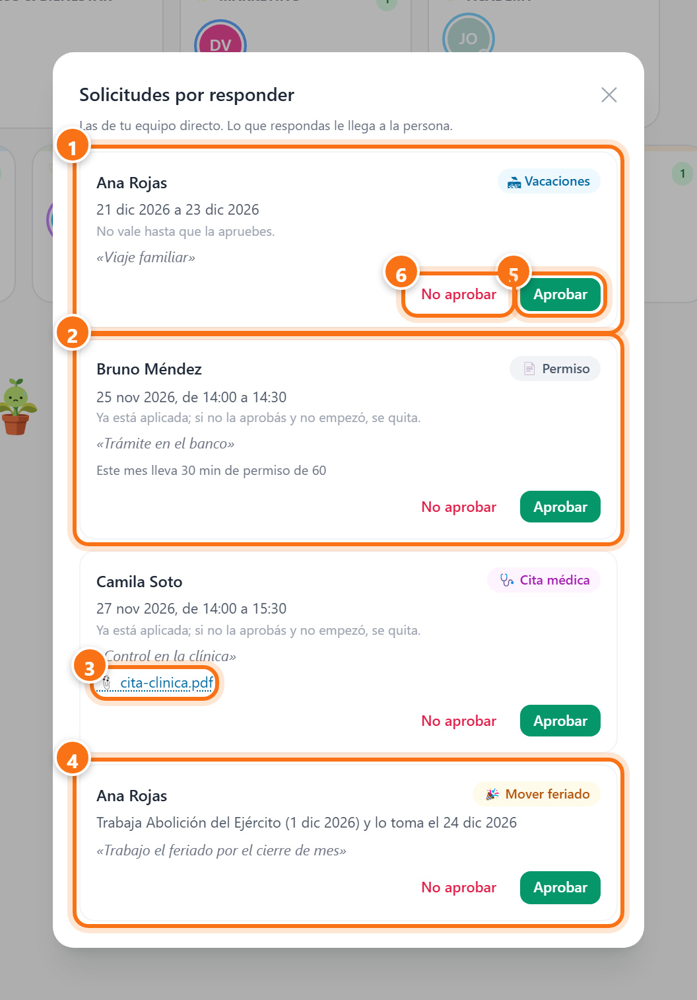
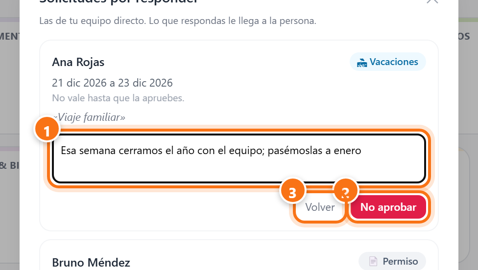
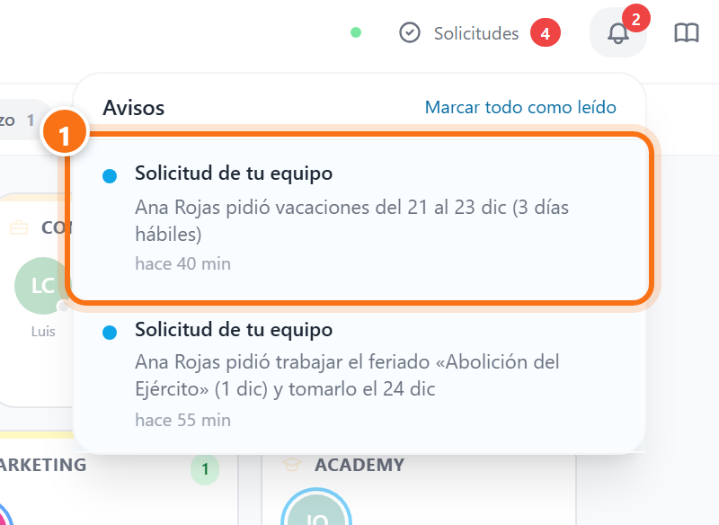
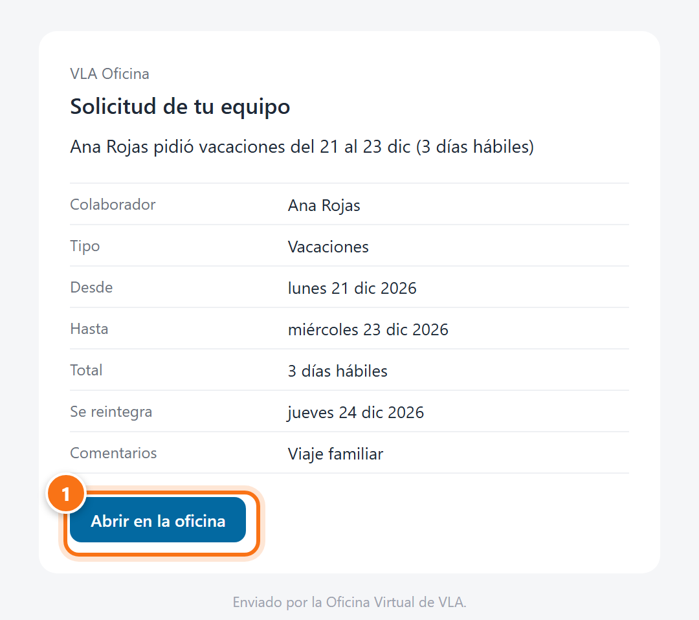
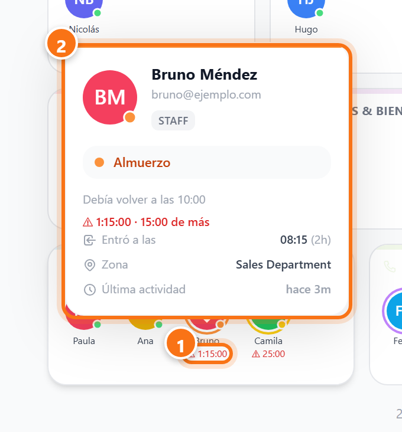
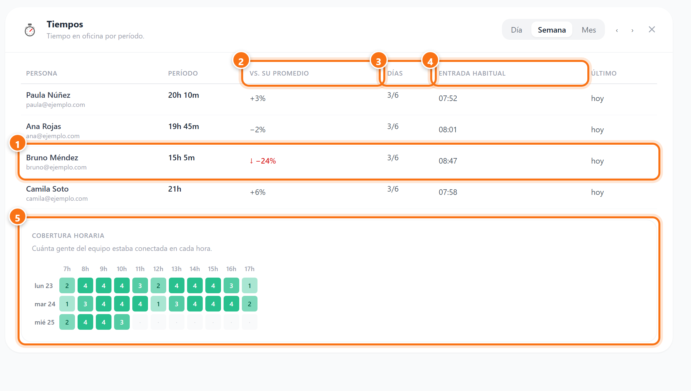
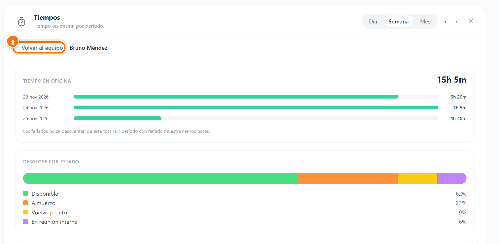

Índice de la guía
Oficina Virtual para jefes
Como jefe usás la oficina igual que todos: entrás, cambiás tu estado y salís. Esta guía explica solo lo que se suma por tener gente a cargo. Lo básico está en la guía para colaboradores.
Las capturas son de una oficina de ejemplo. En ellas, Paula Núñez es la jefa de Ventas y tiene a cargo a Ana, Bruno y Camila. Los nombres son inventados.
Dónde ves lo pendiente
Cuando tenés gente a cargo, en el encabezado aparece el botón Solicitudes. El número rojo dice cuántas solicitudes de tu equipo esperan tu respuesta.

- 1Solicitudes: abre la bandeja con todo lo que tenés que responder.
- 2La campana: te avisa de cada pedido nuevo.
- 3Las guías de uso: tocá el libro y elegís esta o la de colaboradores.
Responder las solicitudes
Tocá Solicitudes. Ahí está todo lo que pidió tu equipo directo, en un solo lugar.

- 1Vacaciones: no valen hasta que las apruebes. Mientras tanto, la persona ve «Esperando a tu jefe».
- 2Permiso: ya está aplicado, porque el permiso vale desde que se pide. Abajo ves cuánto permiso lleva usado en el mes (el tope es 1 hora).
- 3Documentos: si la persona adjuntó un comprobante, tocalo para abrirlo.
- 4Mover un feriado: la persona trabaja el feriado y lo toma otro día del mismo mes.
- 5Aprobar: un toque y listo.
- 6No aprobar: te pide el motivo (ver el capítulo siguiente).
A la persona le llega un aviso a la campana, otro por Bitrix y un correo con todos los datos de la solicitud. Ese correo va con copia a vos y a RRHH, así RRHH tiene registro sin que tengas que reenviar nada.
Cuando no aprobás
Tocá No aprobar en la solicitud. Aparece un espacio para el motivo.

- 1Escribí por qué. La persona lo va a leer tal cual, así que conviene proponerle otra fecha si se puede.
- 2No aprobar confirma. Se activa cuando el motivo tiene al menos 5 letras.
- 3Volver, si te arrepentiste.
Si no aprobás un permiso o una cita que todavía no empezó, se quita de la oficina. Si ya empezó, queda registrado como no aprobado: la persona igual faltó, y cuenta para su tope del mes.
Cómo te enterás
Cada vez que alguien de tu equipo pide algo, te llega un aviso por varios lados a la vez:
- la campana de la oficina;
- un aviso de Windows si tenés la app de escritorio abierta, o del navegador si no;
- un mensaje de Bitrix;
- un correo con todos los datos.

- 1Tocá el aviso y se abre la bandeja directamente.
El correo
Trae lo mismo que el formulario de papel de RRHH: quién, qué, desde, hasta, cuántos días hábiles, cuándo se reintegra y los comentarios.

- 1Abrir en la oficina te lleva a la bandeja para responder.
Si una solicitud lleva más de 20 horas sin respuesta, de lunes a viernes a las 9:00 te llega un recordatorio.
Quién se pasó de la hora
En el mapa, debajo de cada persona de tu equipo que está en almuerzo, en una pausa o con permiso, aparece un reloj. Se pone naranja 5 minutos antes del límite y rojo cuando lo pasa. Al pasar el mouse ves el detalle.

- 1El reloj: cuánto tiempo lleva en ese estado.
- 2La tarjeta: a qué hora debía volver y cuántos minutos de más lleva.
Solo la persona, su jefe y RRHH. El resto del equipo ve el reloj sin color, para que nadie quede expuesto frente a sus compañeros. La vuelta es manual: hasta que la persona marque Disponible, el tiempo sigue contando como almuerzo o pausa.
Las horas de tu equipo
En la pestaña Tiempos, en lugar de ver solo tus horas, ves una fila por persona de tu equipo (vos incluido). Tu equipo es toda la gente que tenés debajo, no solo quienes te reportan directo: si sos jefe de un supervisor, también ves a su gente, para cubrir cuando no está. Las solicitudes, en cambio, las aprueba siempre el jefe directo.
Si una fila dice «no marcó salida · se cuentan 12 h», esa persona marcó entrada y no marcó salida: para no sumarle horas de más, de esa sesión se cuentan como máximo 12.

- 1Una persona. Tocá la fila para ver su detalle.
- 2Vs. su promedio: compara a la persona consigo misma, con sus semanas anteriores (o días o meses, según lo que estés mirando). Nunca con el resto del equipo. Si la diferencia pasa del 15 %, aparece una flecha.
- 3Días: en cuántos de los días hábiles del período marcó. Para quien trabaja el sábado, el sábado también cuenta.
- 4Entrada habitual: la hora a la que suele entrar. Un día raro no la mueve.
- 5Cobertura horaria: cuánta gente del equipo estaba conectada en cada hora. Sirve para ver si quedan horas sin nadie.
El detalle de una persona
Al tocar una fila ves lo mismo que esa persona ve de sí misma: su tiempo por día y en qué estados lo pasó.

- 1Volver al equipo regresa a la tabla.
Preguntas frecuentes
¿Qué pasa si no respondo una solicitud?
Un permiso o una cita ya valen, así que la persona puede ausentarse igual. Las vacaciones no valen hasta que las apruebes. Si pasan más de 20 horas, te llega un recordatorio cada mañana de lunes a viernes.
Aprobé algo por error.
Avisale a RRHH: lo anula desde la oficina, y a la persona le llega un aviso con el motivo.
Me llegó la solicitud de alguien que no es de mi equipo.
A la oficina le figura que sos su jefe directo. Avisale a RRHH para que lo corrija en Personas.
Alguien de mi equipo no me aparece en Solicitudes ni en Tiempos.
Lo mismo: su jefe directo está mal cargado. RRHH lo corrige en Personas.
¿Por qué alguien aparece en rojo si ya volvió?
Volver es manual. Hasta que la persona marque Disponible, la oficina la sigue mostrando en almuerzo o en pausa.